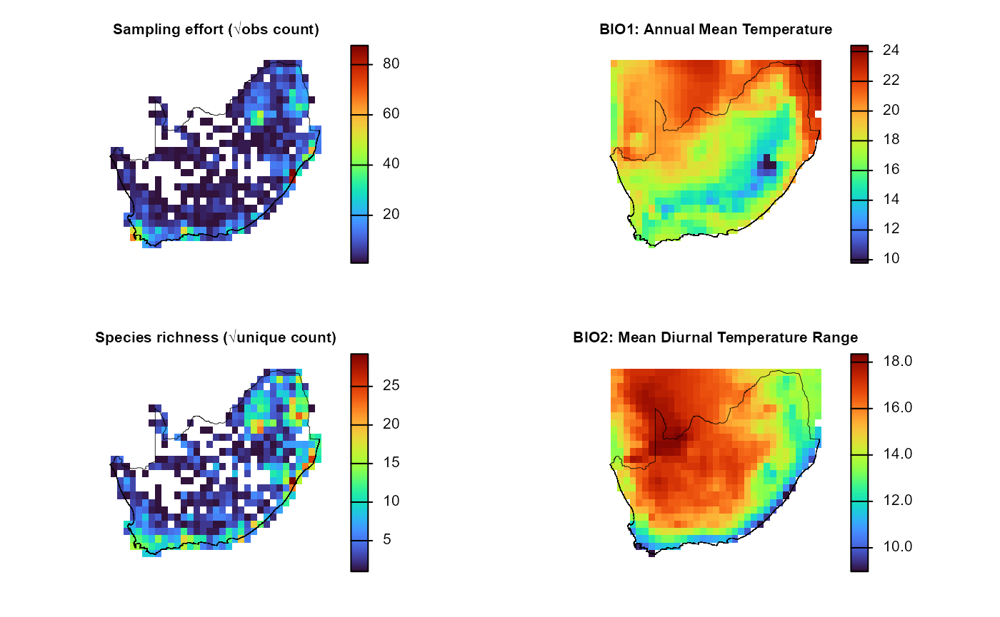
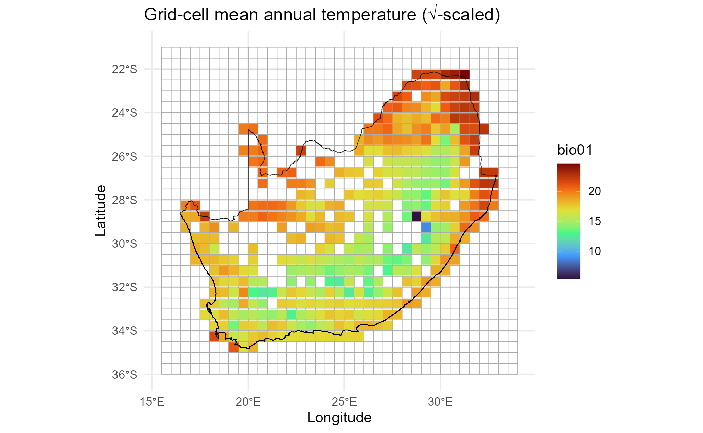
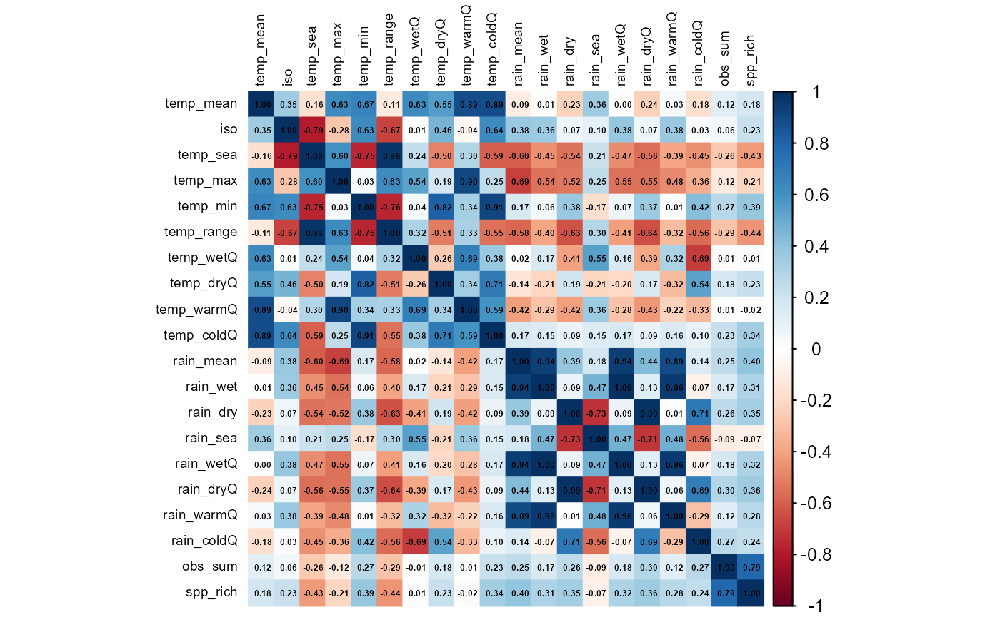

dissmapr
A Novel Framework for Automated Compositional Dissimilarity and Biodiversity Turnover Analysis
1. Generate site by environment matrix using
get_enviro_data()
Spatial models are most informative when each sampling unit couples a
biological response (in this example, sampling effort
and species richness) with the same suite of
environmental predictors.get_enviro_data() attaches environmental predictors to each
grid cell via a six-stage routine:
o buffer the analysis lattice,
o retrieve or read the required rasters,
o crop them to the buffered extent,
o extract raster values at every grid-cell
centroid,
o interpolate any missing data gaps, and
o append the finished covariate set to the grid
summary.
The subsections below implement this workflow:
-
Download and sample 19 WorldClim bioclim variables:
obtains the 5-arc-min (~10 km) WorldClim v2.1,
returns
biostack viageodata, crops it, and attaches climate values to every centroid. -
Bind climate, effort, and richness into one raster
stack: combines √-scaled effort (
obs_sum), √-scaled richness (spp_rich), and the 19 climate layers into a singleSpatRastaligned to the 0.5° grid. - Inspect the extracted covariates: produces a quick map (e.g. mean annual temperature) and previews the data to verify alignment and plausibility.
-
Assemble a modelling matrix: consolidates
coordinates, effort, richness, and all climate predictors into a tidy
data frame (
grid_env) ready for statistical modelling. -
Optional >> Reproject centroids for
metric-space analyses: converts centroid coordinates from
WGS-84(EPSG:4326) to aAlbers Equal-Areaprojection (EPSG:9822) when analyses require distances in metres.
Download and sample 19 WorldClim bioclim
variables
Fetch the 5-arc-min (~10 km) bioclim stack via geodata
package and attach values to every centroid.
# Retrieve 19 bioclim layers (≈10-km, WorldClim v2.1) for all grid centroids
data_path = system.file("extdata", package = "dissmapr") # cache folder for rasters
enviro_list = get_enviro_data(
data = grid_spp, # centroids + obs_sum + spp_rich
buffer_km = 10, # pad the AOI slightly
source = "geodata", # WorldClim/SoilGrids interface
var = "bio", # bioclim variable set
res = 5, # 5-arc-min ≈ 10 km
path = data_path,
sp_cols = 7:ncol(grid_spp), # ignore species columns
ext_cols = c("obs_sum", "spp_rich") # carry effort & richness through
)
# Quick checks
str(enviro_list, max.level = 1)
#> List of 3
#> $ env_rast:S4 class 'SpatRaster' [package "terra"]
#> $ sites_sf: sf [415 × 2] (S3: sf/tbl_df/tbl/data.frame)
#> ..- attr(*, "sf_column")= chr "geometry"
#> ..- attr(*, "agr")= Factor w/ 3 levels "constant","aggregate",..: NA
#> .. ..- attr(*, "names")= chr "grid_id"
#> $ env_df : tibble [415 × 24] (S3: tbl_df/tbl/data.frame)
# (Optional) Assign concise layer names for readability
# Find names here https://www.worldclim.org/data/bioclim.html
names_env = c("temp_mean","mdr","iso","temp_sea","temp_max","temp_min",
"temp_range","temp_wetQ","temp_dryQ","temp_warmQ",
"temp_coldQ","rain_mean","rain_wet","rain_dry",
"rain_sea","rain_wetQ","rain_dryQ","rain_warmQ","rain_coldQ")
names(enviro_list$env_rast) = names_env
# (Optional) Promote frequently-used objects
env_r = enviro_list$env_rast # cropped climate stack
env_df = enviro_list$env_df # site × environment data-frame
# Quick checks
env_r
#> class : SpatRaster
#> size : 154, 195, 19 (nrow, ncol, nlyr)
#> resolution : 0.08333333, 0.08333333 (x, y)
#> extent : 16.66667, 32.91667, -34.91667, -22.08333 (xmin, xmax, ymin, ymax)
#> coord. ref. : lon/lat WGS 84 (EPSG:4326)
#> source(s) : memory
#> names : temp_mean, mdr, iso, temp_sea, temp_max, temp_min, ...
#> min values : 5.158916, 5.891667, 45.32084, 143.0743, 14.832, -6.284, ...
#> max values : 24.796417, 18.659584, 67.09737, 701.3335, 38.518, 13.800, ...
dim(env_df); head(env_df)
#> [1] 415 24
#> # A tibble: 6 × 24
#> grid_id centroid_lon centroid_lat bio01 bio02 bio03 bio04 bio05 bio06 bio07
#> <chr> <dbl> <dbl> <dbl> <dbl> <dbl> <dbl> <dbl> <dbl> <dbl>
#> 1 1026 28.8 -22.3 21.9 14.5 55.7 427. 32.4 6.44 26.0
#> 2 1027 29.2 -22.3 21.8 14.6 53.9 453. 33.0 5.87 27.1
#> 3 1028 29.7 -22.3 21.5 14.0 56.3 393. 31.7 6.80 24.9
#> 4 1029 30.3 -22.3 23.0 13.7 57.8 358. 32.8 9.14 23.7
#> 5 1030 30.8 -22.3 23.6 13.8 59.6 334. 33.5 10.3 23.2
#> 6 1031 31.3 -22.3 24.6 14.6 61.7 332. 34.8 11.0 23.8
#> # ℹ 14 more variables: bio08 <dbl>, bio09 <dbl>, bio10 <dbl>, bio11 <dbl>,
#> # bio12 <dbl>, bio13 <dbl>, bio14 <dbl>, bio15 <dbl>, bio16 <dbl>,
#> # bio17 <dbl>, bio18 <dbl>, bio19 <dbl>, obs_sum <dbl>, spp_rich <dbl>get_enviro_data() buffered the grid centroids by 10
km, fetched the requested rasters, cropped them, extracted values at
each centroid, filled isolated NAs, and merged the results with
obs_sum and spp_rich.
2. Bind climate, effort, and richness into one raster stack
Fuse the √-scaled sampling‐effort (obs_sum) and richness
(spp_rich) layers with the 19 bioclim rasters
into a single, co-registered SpatRast. A unified stack
ensures that all predictors share the same grid, streamlining downstream
map algebra, multivariate modelling, and spatial cross-validation.
# Resample climate stack to the 0.5 ° grid and concatenate
env_effRich_r = c(
effRich_r, # effort + richness
resample(env_r, effRich_r) # aligns 19 climate layers
)
# 2. Open a 2×2 layout and plot each layer + outline
old_par = par(mfrow = c(2, 2), # multi‐figure by row: 1 row and 2 columns
mar = c(1, 1, 1, 2)) # margins sizes: bottom (1 lines)|left (1)|top (1)|right (2)
titles = c("Sampling effort (√obs count)",
"Species richness (√unique count)",
"BIO1: Annual Mean Temperature",
"BIO2: Mean Diurnal Temperature Range")
for (i in 1:4) {
plot(env_effRich_r[[i]],
col = viridisLite::turbo(100),
colNA = NA,
axes = FALSE,
main = titles[i],
cex.main = 0.8) # smaller title
plot(terra::vect(rsa), add = TRUE, border = "black", lwd = 0.4)
}
par(old_par) 3. Inspect the extracted covariates
Environmental data were linked to grid centroids using
get_enviro_data(), now visualise the spatial variation in
selected climate variables to check results.
# Make column headers explicit
# names(env_df)[1:5] = c("grid_id","centroid_lon","centroid_lat","obs_sum","spp_rich")
# Simple check of dimensions and first rows
dim(env_df)
#> [1] 415 24
head(env_df[, 1:6])
#> # A tibble: 6 × 6
#> grid_id centroid_lon centroid_lat bio01 bio02 bio03
#> <chr> <dbl> <dbl> <dbl> <dbl> <dbl>
#> 1 1026 28.8 -22.3 21.9 14.5 55.7
#> 2 1027 29.2 -22.3 21.8 14.6 53.9
#> 3 1028 29.7 -22.3 21.5 14.0 56.3
#> 4 1029 30.3 -22.3 23.0 13.7 57.8
#> 5 1030 30.8 -22.3 23.6 13.8 59.6
#> 6 1031 31.3 -22.3 24.6 14.6 61.7
# Quick map of mean annual temperature (√-scaled bubble size)
ggplot() +
geom_sf(data = grid_sf, fill = NA, colour = "darkgrey", alpha = 0.4) +
geom_point(data = env_df,
aes(x = centroid_lon,
y = centroid_lat,
colour = bio01),
shape = 15,
size = 3) +
# scale_size_continuous(range = c(2,6)) +
scale_colour_viridis_c(option = "turbo") +
geom_sf(data = rsa, fill = NA, colour = "black") +
theme_minimal() +
labs(title = "Grid-cell mean annual temperature (√-scaled)",
x = "Longitude", y = "Latitude")
Goal of this plot is to quickly check that the environmental
predictors (e.g. bio01 >> mean annual temperature)
line up with the 0.5° grid.
4. Assemble the modelling matrix grid_env
Compile a site × environment data frame
(grid_env) in which each 0.5° cell contributes one row
containing centroid coordinates, √-scaled sampling effort, species
richness, and the 19 bioclim predictors. The resulting
matrix is immediately usable for GLMs, GAMs, machine-learning,
ordination, and β-diversity analyses.
# Build the final site × environment table
grid_env = env_df %>%
dplyr::select(grid_id, centroid_lon, centroid_lat,
obs_sum, spp_rich, dplyr::everything())
str(grid_env, max.level = 1)
#> tibble [415 × 24] (S3: tbl_df/tbl/data.frame)
head(grid_env)
#> # A tibble: 6 × 24
#> grid_id centroid_lon centroid_lat obs_sum spp_rich bio01 bio02 bio03 bio04
#> <chr> <dbl> <dbl> <dbl> <dbl> <dbl> <dbl> <dbl> <dbl>
#> 1 1026 28.8 -22.3 3 2 21.9 14.5 55.7 427.
#> 2 1027 29.2 -22.3 41 31 21.8 14.6 53.9 453.
#> 3 1028 29.7 -22.3 10 10 21.5 14.0 56.3 393.
#> 4 1029 30.3 -22.3 7 7 23.0 13.7 57.8 358.
#> 5 1030 30.8 -22.3 6 6 23.6 13.8 59.6 334.
#> 6 1031 31.3 -22.3 107 76 24.6 14.6 61.7 332.
#> # ℹ 15 more variables: bio05 <dbl>, bio06 <dbl>, bio07 <dbl>, bio08 <dbl>,
#> # bio09 <dbl>, bio10 <dbl>, bio11 <dbl>, bio12 <dbl>, bio13 <dbl>,
#> # bio14 <dbl>, bio15 <dbl>, bio16 <dbl>, bio17 <dbl>, bio18 <dbl>,
#> # bio19 <dbl>5. Reproject centroids for metric-space analyses** using
sf::st_transform()[OPTIONAL]
Certain analyses (e.g. spatial clustering, variogram modelling)
require coordinates in metres rather than degrees. The snippet below
converts the centroid layer to an Albers Equal-Area
projection.
# Convert the centroid columns to an sf object
centroids_sf = sf::st_as_sf(
grid_env,
coords = c("centroid_lon", "centroid_lat"),
crs = 4326, # WGS-84
remove = FALSE
)
# Reproject to Albers Equal Area (EPSG 9822)
centroids_aea = sf::st_transform(centroids_sf, 9822)
# Append projected X–Y back onto the data-frame
grid_env = cbind(
grid_env,
sf::st_coordinates(centroids_aea) |>
as.data.frame() |>
setNames(c("x_aea", "y_aea")) # rename within the pipeline
)
names(grid_env)
#> [1] "grid_id" "centroid_lon" "centroid_lat" "obs_sum" "spp_rich"
#> [6] "bio01" "bio02" "bio03" "bio04" "bio05"
#> [11] "bio06" "bio07" "bio08" "bio09" "bio10"
#> [16] "bio11" "bio12" "bio13" "bio14" "bio15"
#> [21] "bio16" "bio17" "bio18" "bio19" "x_aea"
#> [26] "y_aea"
head(grid_env[, c("grid_id","centroid_lon","centroid_lat","x_aea","y_aea")])
#> grid_id centroid_lon centroid_lat x_aea y_aea
#> 1 1026 28.75 -22.25004 6392274 -6836200
#> 2 1027 29.25 -22.25004 6480542 -6808542
#> 3 1028 29.75 -22.25004 6568648 -6780369
#> 4 1029 30.25 -22.25004 6656587 -6751682
#> 5 1030 30.75 -22.25004 6744357 -6722482
#> 6 1031 31.25 -22.25004 6831955 -6692770At this point every grid cell has species metrics, climate predictors, and is optionally projected into metre coordinates, all in a single tidy object.
6. Diagnose and mitigate collinearity with
rm_correlated()
Highly inter-correlated predictors inflate variance, bias coefficient
estimates, and complicate ecological inference.rm_correlated() screens the environmental matrix for
pairwise correlations that exceed a user-defined threshold (here |r|
> 0.70), then iteratively prunes the variable with the highest
average absolute correlation. The routine
- Computes a Pearson (default) Correlation matrix for
the supplied columns;
-
Ranks variables by their mean absolute
correlation;
-
Discards the worst offender, recomputes the matrix,
and repeats until all remaining pairs lie below the threshold;
- Optional >> displays the final Correlation heat-map for visual QC.
The result is a reduced predictor set that retains maximal information while minimising multicollinearity.
# (Optional) Rename BIO
names(env_df) = c("grid_id", "centroid_lon", "centroid_lat", names_env, "obs_sum", "spp_rich")
# Run the filter and compare dimensions
# Filter environmental predictors for |r| > 0.70
env_vars_reduced = rm_correlated(
data = env_df[, c(4, 6:24)], # drop ID + coord columns
cols = NULL, # infer all numeric cols
threshold = 0.70,
plot = TRUE # show heat-map of retained vars
)
#> Variables removed due to high correlation:
#> [1] "temp_range" "temp_sea" "temp_max" "rain_mean" "rain_dryQ"
#> [6] "temp_min" "temp_warmQ" "temp_coldQ" "rain_wetQ" "rain_wet"
#> [11] "rain_coldQ" "rain_sea" "spp_rich"
#>
#> Variables retained:
#> [1] "temp_mean" "iso" "temp_wetQ" "temp_dryQ" "rain_dry"
#> [6] "rain_warmQ" "obs_sum"
# Before vs after
c(original = ncol(env_df[, c(4, 6:24)]),
reduced = ncol(env_vars_reduced))
#> original reduced
#> 20 7env_vars_reduced now contains a decorrelated subset
of climate predictors suitable for stable GLMs, GAMs, machine-learning,
or ordination workflows.